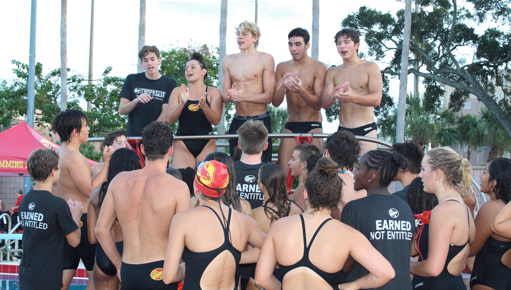

About Us
Here at the Tampa Prep Swim and Dive Team we promote the development of patience and mental toughness among the countless good qualities we promote that will not only help you in the pool, but help you in life. Here at the swim pool we don’t grow individually, we grow together, as a team. From the warmup at 4ppm to the warmdown at 6pm our swimmers are constantly tested on not just their natural ability, but their potential for progress. Not every swimmer is going to be the next Michael Phelps and we don’t expect our swimmers to be, but what we do expect is for them to strive to be the best version of yourself and fulfill the school message of aspiring for excellence.
What we teach
Mental Toughness
To be mentally tough
To not let fear stop you from being great
To not let pain stop you from progressing
To not let one race ruin your whole meet
To not let internal thoughts distract you from the process
To not let external thoughts and others opinions distract you from the process
We will believe that you will be as good as you want yourself to be. If you want to be great, you have to earn it. That is what we teach here. These lessons here aren’t just about swimming, they are about life. They are about preparing you for life and for the hardships you will encounter. That is mental toughness. That is what we believe in.
